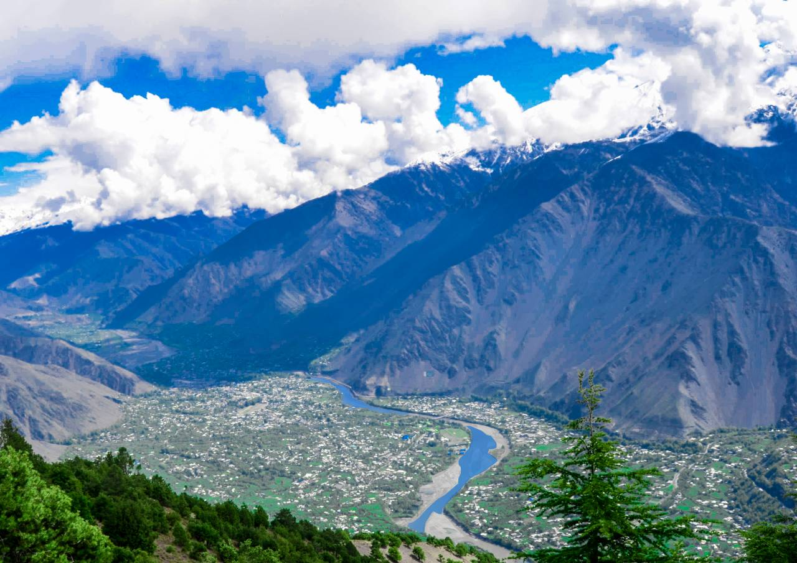

Chitral Valley
Chitral Valley, situated in the Khyber Pakhtunkhwa province of Pakistan, is renowned for its scenic landscapes, cultural diversity, and historical significance. Bounded by the Hindu Kush and Pamir mountain ranges, the valley is home to various ethnic groups, including the Kho, Kalash, and Chitrali people.
Chitral Valley boasts historical sites such as the Chitral Fort (Mehtar's Fort), which has played a crucial role in the region's history. The Shahi Mosque and the Shahi Qila are also notable landmarks.
Linguistic diversity is evident in Chitral Valley, with Khowar being the predominant language. Other languages spoken include Kalasha, Brokskat, and Pashto.
